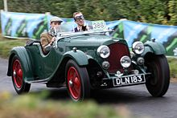

After the war they found new premises at Abingdon Road, Kensington and designed a new car. Bamford left in 1920 and Bamford & Martin was revitalised with funding from Count Louis Zborowski. In 1922, Bamford & Martin produced cars to compete in the French Grand Prix, which went on to set world speed and endurance records at Brooklands. Three works Team Cars with 16-valve twin cam engines were built for racing and record breaking: chassis number 1914, later developed as the Green Pea; chassis number 1915, the Razor Blade record car; and chassis number 1916, later developed as the Halford Special. Approximately 55 cars were built for sale in two configurations; long chassis and short chassis. Bamford & Martin went bankrupt in 1924 and was bought by Dorothea, Lady Charnwood who put her son John Benson on the board. Bamford & Martin went under again in 1925 and the factory closed in 1926, with Lionel Martin leaving. Later that year, Bill Renwick, Augustus (Bert) Bertelli and investors including Lady Charnwood took control of the business. They renamed it Aston Martin Motors and moved it to the former Whitehead Aircraft Limited Hanworth works in Feltham. Renwick and Bertelli had been in partnership some years and had developed an overhead-cam four-cylinder engine using Renwick's patented combustion chamber design, which they had tested in an Enfield-Allday chassis. The only "Renwick and Bertelli" motor car made, it was known as "Buzzbox" and still survives. The pair had planned to sell their engine to motor manufacturers, but having heard that Aston Martin was no longer in production realised they could capitalise on its reputation to jump start the production of a completely new car. Between 1926 and 1937 Bertelli was both technical director and designer of all new Aston Martins, since known as "Bertelli cars". They included the 1½-litre "T-type", "International", "Le Mans", "MKII" and its racing derivative, the "Ulster", and the 2-litre 15/98 and its racing derivative, the "Speed Model". Most were open two-seater sports cars bodied by Bert Bertelli's brother Enrico (Harry), with a small number of long-chassis four-seater tourers, dropheads and saloons also produced. Bertelli was a competent driver keen to race his cars, one of few owner/eufacturer/drivers. The "LM" team cars were very successful in national and international motor racing including at Le Mans and the Mille Miglia. Financial problems reappeared in 1932. Aston Martin was rescued for a year by Lance Prideaux Brune before passing it on to Sir Arthur Sutherland. In 1936, Aston Martin decided to concentrate on road cars, producing just 700 until World War II halted work. Production shifted to aircraft components during the war

Here you can find more information about Aston Martin: Aston Martin
| Year | Chassis | Engine | Driver | |
|---|---|---|---|---|
| 1 | 1959 | Aston Martin DBR4 | Aston Martin L6 | Roy Salvadori |
| 2 | 1959 | Aston Martin DBR4 | Aston Martin L6 | Carroll Shelby |
| 3 | 1960 | Aston Martin DBR4 | Aston Martin L6 | Roy Salvadori |
| 4 | 1960 | Aston Martin DBR5 | Aston Martin L6 | Maurice Trintignant |
| Total | 4 | |||